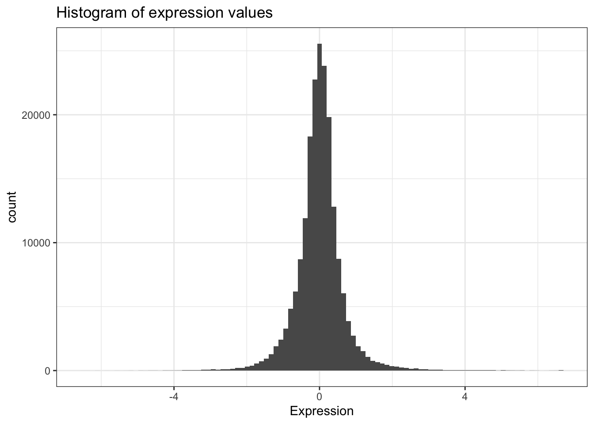

There are lots of different basic data structures in R. If you take any kind of longer introduction to R you’ll probably learn about arrays, lists, matrices, etc. Let’s skip straight to the data structure you’ll probably use most – the data frame. We use data frames to store heterogeneous tabular data in R: tabular, meaning that individuals or observations are typically represented in rows, while variables or features are represented as columns; heterogeneous, meaning that columns/features/variables can be different classes (on variable, e.g. age, can be numeric, while another, e.g., cause of death, can be text).
This lesson assumes a basic familiarity with R.
The data we’re going to look at is cleaned up version of a gene expression dataset from Brauer et al. Coordination of Growth Rate, Cell Cycle, Stress Response, and Metabolic Activity in Yeast (2008) Mol Biol Cell 19:352-367. This data is from a gene expression microarray, and in this paper the authors are examining the relationship between growth rate and gene expression in yeast cultures limited by one of six different nutrients (glucose, leucine, ammonium, sulfate, phosphate, uracil). If you give yeast a rich media loaded with nutrients except restrict the supply of a single nutrient, you can control the growth rate to any rate you choose. By starving yeast of specific nutrients you can find genes that:
You can download the cleaned up version of the data at the link above. The file is called brauer2007_tidy.csv. Later on we’ll actually start with the original raw data (minimally processed) and manipulate it so that we can make it more amenable for analysis.
There are some built-in functions for reading in data in text files. These functions are read-dot-something – for example, read.csv() reads in comma-delimited text data; read.delim() reads in tab-delimited text, etc. We’re going to read in data a little bit differently here using the readr package. When you load the readr package, you’ll have access to very similar looking functions, named read-underscore-something – e.g., read_csv(). You have to have the readr package installed to access these functions. Compared to the base functions, they’re much faster, they’re good at guessing the types of data in the columns, they don’t do some of the other silly things that the base functions do. We’re going to use another package later on called dplyr, and if you have the dplyr package loaded as well, and you read in the data with readr, the data will display nicely.
First let’s load those packages.
library(readr)
library(dplyr)If you see a warning that looks like this: Error in library(packageName) : there is no package called 'packageName', then you don’t have the package installed correctly. See the setup page.
read_csv()Now, let’s actually load the data. You can get help for the import function with ?read_csv. When we load data we assign it to a variable just like any other, and we can choose a name for that data. Since we’re going to be referring to this data a lot, let’s give it a short easy name to type. I’m going to call it ydat. Once we’ve loaded it we can type the name of the object itself (ydat) to see it printed to the screen.
ydat <- read_csv(file="data/brauer2007_tidy.csv")
ydat## # A tibble: 198,430 x 7
## symbol systematic_name nutrient rate expression bp mf
## <chr> <chr> <chr> <dbl> <dbl> <chr> <chr>
## 1 SFB2 YNL049C Glucose 0.05 -0.24 ER to Golgi transport molecular function unknown
## 2 <NA> YNL095C Glucose 0.05 0.28 biological process unknown molecular function unknown
## 3 QRI7 YDL104C Glucose 0.05 -0.02 proteolysis and peptidolysis metalloendopeptidase activity
## 4 CFT2 YLR115W Glucose 0.05 -0.33 mRNA polyadenylylation* RNA binding
## 5 SSO2 YMR183C Glucose 0.05 0.05 vesicle fusion* t-SNARE activity
## 6 PSP2 YML017W Glucose 0.05 -0.69 biological process unknown molecular function unknown
## 7 RIB2 YOL066C Glucose 0.05 -0.55 riboflavin biosynthesis pseudouridylate synthase activity*
## 8 VMA13 YPR036W Glucose 0.05 -0.75 vacuolar acidification hydrogen-transporting ATPase activity, rotationa…
## 9 EDC3 YEL015W Glucose 0.05 -0.24 deadenylylation-independent dec… molecular function unknown
## 10 VPS5 YOR069W Glucose 0.05 -0.16 protein retention in Golgi* protein transporter activity
## # … with 198,420 more rowsTake a look at that output. The nice thing about loading dplyr and reading in data with readr is that data frames are displayed in a much more friendly way. This dataset has nearly 200,000 rows and 7 columns. When you import data this way and try to display the object in the console, instead of trying to display all 200,000 rows, you’ll only see about 10 by default. Also, if you have so many columns that the data would wrap off the edge of your screen, those columns will not be displayed, but you’ll see at the bottom of the output which, if any, columns were hidden from view. If you want to see the whole dataset, there are two ways to do this. First, you can click on the name of the data.frame in the Environment panel in RStudio. Or you could use the View() function (with a capital V).
View(ydat)There are several built-in functions that are useful for working with data frames.
head(): shows the first few rowstail(): shows the last few rowsdim(): returns a 2-element vector with the number of rows in the first element, and the number of columns as the second element (the dimensions of the object)nrow(): returns the number of rowsncol(): returns the number of columnscolnames() (or just names()): returns the column namesstr(): structure of the object and information about the class, length and content of each columnsummary(): works differently depending on what kind of object you pass to it. Passing a data frame to the summary() function prints out useful summary statistics about numeric column (min, max, median, mean, etc.)head(ydat)
tail(ydat)
dim(ydat)
names(ydat)
str(ydat)
summary(ydat)We can access individual variables within a data frame using the $ operator, e.g., mydataframe$specificVariable. Let’s print out all the gene names in the data. Then let’s calculate the average expression across all conditions, all genes (using the built-in mean() function).
# display all gene symbols
ydat$symbol
#mean expression
mean(ydat$expression)Now that’s not too interesting. This is the average gene expression across all genes, across all conditions. The data is actually scaled/centered around zero:

We might be interested in the average expression of genes with a particular biological function, and how that changes over different growth rates restricted by particular nutrients. This is the kind of thing we’re going to do in the next section.
EXERCISE 1
sd function with ?sd).range()).What if we wanted show the mean expression, standard deviation, and correlation between growth rate and expression, separately for each limiting nutrient, separately for each gene, for all genes involved in the leucine biosynthesis pathway?
ydat %>%
filter(bp=="leucine biosynthesis") %>%
group_by(nutrient, symbol) %>%
summarize(mean=mean(expression), sd=sd(expression), r=cor(rate, expression))| nutrient | symbol | mean | sd | r |
|---|---|---|---|---|
| Ammonia | LEU1 | -0.82 | 0.39 | 0.66 |
| Ammonia | LEU2 | -0.54 | 0.38 | -0.19 |
| Ammonia | LEU4 | -0.37 | 0.56 | -0.67 |
| Ammonia | LEU9 | -1.01 | 0.64 | 0.87 |
| Glucose | LEU1 | -0.55 | 0.41 | 0.98 |
| Glucose | LEU2 | -0.39 | 0.33 | 0.90 |
| Glucose | LEU4 | 1.09 | 1.01 | -0.97 |
| Glucose | LEU9 | -0.16 | 0.35 | 0.35 |
| Leucine | LEU1 | 2.70 | 1.08 | -0.95 |
| Leucine | LEU2 | 0.28 | 1.16 | -0.97 |
| Leucine | LEU4 | 0.80 | 1.06 | -0.97 |
| Leucine | LEU9 | 0.39 | 0.18 | -0.77 |
| Phosphate | LEU1 | -0.43 | 0.27 | 0.95 |
| Phosphate | LEU2 | -0.26 | 0.19 | 0.70 |
| Phosphate | LEU4 | -0.99 | 0.11 | 0.24 |
| Phosphate | LEU9 | -1.12 | 0.53 | 0.90 |
| Sulfate | LEU1 | -1.17 | 0.34 | 0.98 |
| Sulfate | LEU2 | -0.96 | 0.30 | 0.57 |
| Sulfate | LEU4 | -0.24 | 0.43 | -0.60 |
| Sulfate | LEU9 | -1.24 | 0.55 | 0.99 |
| Uracil | LEU1 | -0.74 | 0.73 | 0.89 |
| Uracil | LEU2 | 0.18 | 0.13 | -0.07 |
| Uracil | LEU4 | -0.65 | 0.44 | 0.77 |
| Uracil | LEU9 | -1.02 | 0.91 | 0.94 |
Neat eh? Let’s learn how to do that in the advanced manipulation with dplyr lesson.